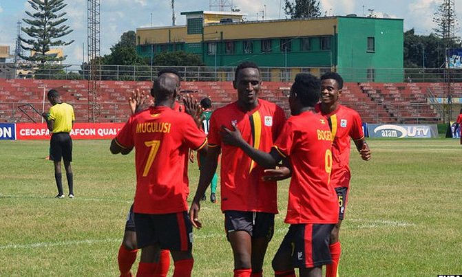

Ivan Bogere's brace after Kenneth Semakula's opener helps The Hippos advance to next year's finals.
 Uganda now have one hand on the zonal trophy after seeing off Kenya in Tanzania on Monday. (Photo credit: FUFA)Ivan Bogere's brace after Kenneth Semakula's opener at the Black Rhino Academy in the district of Karatu helped The Hippos to advance to the finals, as well as to the final of the zonal competition, where they will face either hosts Tanzania or South Sudan, who play in the other semi-final later today (3.30pm). There were similarities in his goals. His first goal in both games came in the first half and the second goals were both second-half penalities. Meanwhile, in Monday's game, Enock Wanyama pulled one back for the Kenyans 10 minutes before time, but any sense of an attempt at a comeback was kept at bay as the Ugandan lads held on to progress
Comment